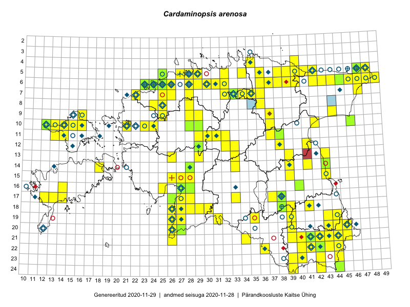

Cardaminopsis arenosa
Uuendatud: 2016-12-01
Kaardile koondatud taksonid: Cardaminopsis arenosa (L.) Hayek

Kaart põhineb 210 kirjel, neist vaatlusi 208 ja eksemplare 2.
Kuvatud viited 20 esimesele andmebaasikirjele, ülejäänud PlutoFis
- Malle Leht: 2015-07-09: : ala
- Peedu Saar, Timo Luhamäe: 2015-05-09: 12-29: ala
- Peedu Saar, Timo Luhamäe: 2015-05-10: 12-32: ala
- Peedu Saar, Timo Luhamäe: 2015-05-12: 07-35: ala
- Peedu Saar, Timo Luhamäe: 2015-05-12: 07-36: ala
- Peedu Saar, Timo Luhamäe: 2015-05-13: 06-39: ala
- Peedu Saar, Timo Luhamäe: 2015-05-13: 06-40: ala
- Peedu Saar, Liina Oja: 2015-05-20: 18-27: ala
- Peedu Saar, Liina Oja: 2015-05-21: 16-25: ala
- Peedu Saar, Liina Oja: 2015-05-20: 18-28: ala
- Peedu Saar, Liina Oja: 2015-05-20: 18-26: ala
- Peedu Saar, Toomas Kukk: 2015-05-27: 09-16: ala
- Toomas Kukk, Indrek Tammekänd: 2015-05-09: 14-28: ala
- Tiit Hallikma, Indrek Tammekänd, Toomas Kukk: 2015-06-09: 12-29: ala
- Toomas Kukk, Raivo Kalle: 2015-05-13: 06-38: ala
- Toomas Kukk, Raivo Kalle: 2015-05-13: 06-38: GPS punkt
- Toomas Kukk, Raivo Kalle: 2015-05-11: 09-37: ala
- Ott Luuk, Peedu Saar: 2015-08-13: 24-44: ala
- Ott Luuk, Toomas Kukk, Thea Kull, Peedu Saar, Timo Luhamäe: 2015-06-25: 10-28: ala
- Toomas Kukk, Raivo Kalle: 2015-05-11: 09-37: GPS punkt